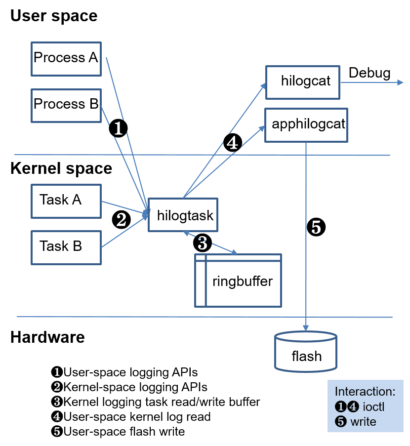

DFX¶
Introduction¶
This repository is used to store the code of Design for X (DFX) frameworks, including Design for Reliability (DFR) and Design for Testability (DFT).
As chip resources are limited and hardware platforms are diversified, component-based and customizable DFX frameworks need to be provided for different hardware architectures and resources. Two types of lightweight DFX frameworks (mini and featured) are available for hardware platforms powered by RISC-V, Cortex-M, and Cortex-A.
mini: This framework is intended for hardware platforms with Cortex-M or equivalent processing capabilities. The system memory is generally less than 512 KB. There is only one lightweight file system that can be used in limited scenarios, or no file system at all. The mini framework complies with the Cortex Microcontroller Software Interface Standard (CMSIS).
featured: This framework is intended for hardware platforms with Cortex-A or equivalent processing capabilities. The system memory is generally greater than 512 KB. There is a comprehensive file system for storing a large amount of data. The featured framework complies with the Portable Operating System Interface (POSIX) specifications.
Directory Structure¶
Table 1 Directory structure of the source code for lightweight DFX
Directory | Description |
|---|---|
interface | Stores all header files for open APIs. |
interfaces/kits/hilog | Defines open APIs available for logs in the featured framework. |
interfaces/kits/hilog_lite | Defines open APIs available for logs in the mini framework. |
interfaces/innerkits/hievent_lite | Defines open APIs available for event printing in the mini framework. |
services/hilogcat_lite | Stores services and commands related to logs. |
services/hilogcat_lite/apphilogcat | Provides the log flushing to disk service in the featured framework. |
services/hilogcat_lite/command | Provides DFX commands specific to the mini framework. |
services/hilogcat_lite/hilogcat | Provides commands to output logs in the featured framework. |
services/hiview_lite | Registers the DFX service specific to the mini framework. |
frameworks/ddrdump_lite | Dumps Double Data Rate (DDR) memory in the mini framework. |
frameworks/hievent_lite | Records event printing in the DFX-mini framework. |
frameworks/hilog_lite | Defines APIs for logging. |
frameworks/hilog_lite/featured | Defines APIs for logging in the featured framework. |
frameworks/hilog_lite/mini | Defines APIs for logging in the mini framework. |
utils/lite | Stores utils. It contains the configuration items of the mini framework. |
Constraints¶
The overall code of the mini framework is developed based on the C standard library.
Usage (mini Framework)¶
The mini framework is a simple and compact DFX design that provides the logging function.
The following takes Module A as an example to describe how to add a module and print logs.
Step 1: Add the module ID.
Define HILOG_MODULE_A in HiLogModuleDef of interfaces/kits/hilog_lite/hiview_log.h.
typedef enum { /** DFX */ HILOG_MODULE_HIVIEW = 0, /** System Module A */ HILOG_MODULE_A, /** Maximum number of modules */ HILOG_MODULE_MAX } HiLogModuleType;
Step 2: Register the module.
Add the following code to the initialization process of Module A to register it with the logging framework:
HiLogRegisterModule(HILOG_MODULE_A, "A");
Step 3: Modify the static configuration of the DFX framework.
Modify g_hiviewConfig in the following file as required (By default, modification is not required and logs are output to the serial port):
utils/lite/hiview_config.c
Configuration Item
Description
outputOption
Log output mode. The value can be:
OUTPUT_OPTION_DEBUG: Logs are directly output to the serial port without cross-task scheduling. This value is used only for temporary debugging.
OUTPUT_OPTION_FLOW (default value): Logs are output as data flow to the serial port.
OUTPUT_OPTION_TEXT_FILE: Logs are output as text files.
level
Log level for output. Only the logs whose levels are higher than or equal to the level specified by this parameter can be output. The value can be:
HILOG_LV_DEBUG, HILOG_LV_INFO, HILOG_LV_WARN, HILOG_LV_ERROR, or HILOG_LV_FATAL
logSwitch
Logging switch. The log component can be successfully initialized even if this switch is turned off before compilation. By default, this switch is turned on. The value can be:
HIVIEW_FEATURE_ON or HIVIEW_FEATURE_OFF
dumpSwitch
Dumping switch. If this switch is turned off before compilation, the DUMP component will not be initialized. By default, this switch is turned off. The value can be:
HIVIEW_FEATURE_ON or HIVIEW_FEATURE_OFF
eventSwitch
Event output switch. If this switch is turned off before compilation, the Event component will not be initialized. By default, this switch is turned off. The value can be:
HIVIEW_FEATURE_ON or HIVIEW_FEATURE_OFF
Step 4: Print logs.
Include #include “log.h” in the .c file where logs need to be printed, call the following function:
HILOG_INFO(HILOG_MODULE_A, “log test: %d”, 88);
Parameter description:
Parameter
Mandatory
Data Type
Description
mod
Yes
uint8
Module or service ID.
IDs are planned and allocated in a unified manner. A maximum of 64 IDs are supported. Third-party applications use HILOG_MODULE_APP as their module ID.
fmt
Yes
char *
Format specifier for output.
1. A maximum of six variable parameters are supported. %s is not supported.
2. The maximum length of a formatted log record is 128 bytes. If the length of a log exceeds 128 bytes, the log cannot be printed.
Variable parameters
No
int32
Only numeric types are supported. A maximum of six variable parameters are allowed.
Usage (featured Framework)¶
The featured framework provides comprehensive DFX features and logging APIs.
Native C/C++ APIs
Available hilog APIs:
HILOG_DEBUG(type, ...)
HILOG_INFO(type, ...)
HILOG_WARN(type, ...)
HILOG_ERROR(type, ...)
HILOG_FATAL(type, ...)
Usage guidelines:
Define the log tag.
Perform local debugging. (The domain value 0 can be used.)
Include the header file: #include <hilog/log.h>
Add the dependent library libhilog to BUILD.gn.
API rules:
The format specifier is labeled public by default, for example, HILOGI(“Hello Worldn”); >> Hello World.
The formatted parameter is labeled private by default, for example, HILOGI(“Age is %dn”, 10); >> Age is <private>.
Parameters labeled %{private} are private data, for example, HILOGI(“Age is %{private}dn”, 10); >> Age is <private>.
Parameters labeled %{public} are public data, for example, HILOGI(“Age is %{public}dn”, 10); >>Age is 10.
Parameter description:
Parameter | Description: |
|---|---|
domain | Domain ID |
tag | Log tag |
isFmtPrivate | Whether the format specifier is private |
fmt | Format specifier |
args | Parameters to be displayed using the format specifier |
Viewing logs
Go to the /storage/data/log/ directory to view hilog logs for debugging purpose.
Run the hilogcat command to view hilog logs in real time.
Logging system architecture

hilogtask: kernel task for logging
This is a task or thread of the Linux kernel. It is initialized during system startup.
When a module in the kernel calls its logging API, it transfers the formatted log content to the task and stores it in a ringbuffer.
When the logging API is called in user space, the formatted log content is written into the driver node by calling ioctl. The driver node then sends the log content to hilogtask, and hilogtask stores the log content in the ringbuffer.
hilogcatd: storing logs in user space
This is a user-space process. It periodically reads the log content from the ringbuffer and stores it in the log file.
Log files can be compressed in gzip format by using zlib.
The size of a single file and the number of files can be configured during compilation.
hilogcat: command line tool for viewing logs
This tool reads the content in the ringbuffer content via the kernel driver API, and then outputs the content to stdout.
ringbuffer: configurable
The ringbuffer size can be configured during compilation.
Repositories Involved¶
hiviewdfx_frameworks_hievent_lite
hiviewdfx_frameworks_ddrdump_lite
hiviewdfx_frameworks_hilog_lite
hiviewdfx_interfaces_innerkits_hilog
hiviewdfx_interfaces_innerkits_hievent_lite
hiviewdfx_interfaces_kits_hilog
hiviewdfx_interfaces_kits_hilog_lite
hiviewdfx_services_hiview_lite
hiviewdfx_services_hilogcat_lite
hiviewdfx_utils_lite